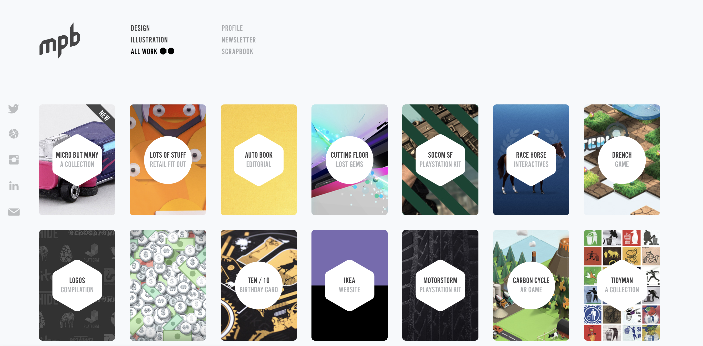
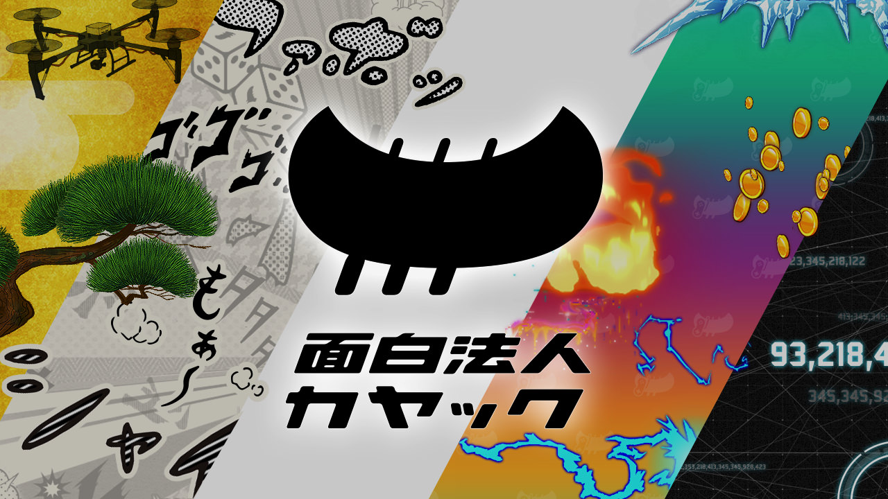

Agenda
- トレーニング概要
- ポートフォリオとは?
- ポートフォリオ作成のポイント
- ポートフォリオ作成
ポートフォリオとは?
業界業種によって意味が若干変わりますがIT業界では、自分のこれまでの実績をアピールするための成果集のことを指します。
元々はデザイナー職が自身の作品をまとめ企業に提出をしていましたが、近年ではエンジニア職に対してもポートフォリオを
求める企業は増えています。

ポートフォリオ作成のポイント
基本項目
自分にはどんな技術や経験があり、開発チームにどんな貢献ができるかの共通認識を作ることが大切です
- プロジェクト名
- プロジェクト内容
- 開発期間
- チームの規模・役割
- 技術スタック (必要な場合はバージョンも記述)
- 特記事項 (困難だったことや成果)
- 詳細リンク (あれば)
注意点
クレジットができないプロジェクトも多々あるので実際の仕事を記述する場合はメンバーに確認をとりましょう
ポートフォリオの作成例
- 面白法人カヤックのコーポレートサイトリニューアル
- KADO (個人)
面白法人カヤックのコーポレートサイトリニューアル
- チームの規模: Desiner: 4, Frontend: 3 ~ 4, Backend: 3
- 開発期間: 3ヶ月
- アーキテクチャ: Ruby: 2.4, RoR: 5.1, ES2015, AWS, Chef
- リンク:https://www.kayac.com
■ アプリケーション概要
面白法人カヤックのコーポレートサイトです。リニューアルは3年ぶり8回目。
コンセプトは、「複数の世界観をもつコーポレートサイト」。たくさんの顔を持つカヤックの多面性を表現するために、「Simple」「Manga」「Game」「Tech」「Kamakura」の5つのデザインを用意しており、ユーザーはサイトを自分の好きなテーマに切り替えて楽しむことができます。
■ 役割・成果
バックエンドリードエンジニアとして、リニューアルの設計からローンチまで全行程を監修・実装しました。
今回のリニューアルではバックエンド・フロントエンド共にゼロからの作り直しとなりました。
・DB再設計
・既存データ移行
・運用管理ツール作成
・デプロイ環境構築
・アプリケーション全般の実装・レビュー
・インフラ構築
